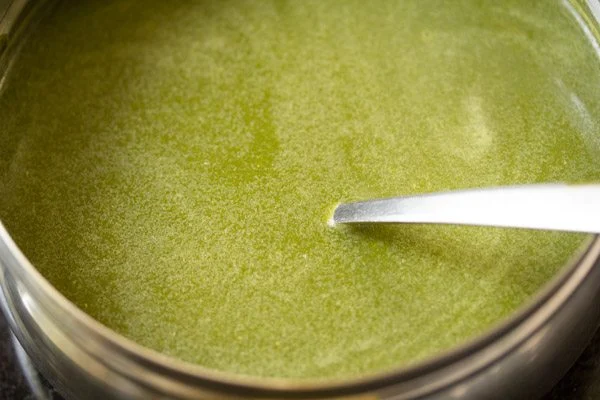

1. Rinse 1 cup tightly packed coriander leaves, ½ cup tightly packed mint leaves, 2 to 3 green chilies and 1 inch ginger very well in water a few times. Drain all the water. Peel the ginger and roughly chop it. Also chop the green chilies. Roughly chop the coriander leaves and mint leaves. Don’t use the stem of mint leaves as they can make the spiced water have a bitter taste. Only use the fresh mint leaves.
2. Add coriander leaves, mint leaves, ginger and green chili in a grinder or blender jar. For a less spicy pani you can add just 1 chopped green chilli.
3. Add 1 tablespoon tightly packed tamarind and 3.5 to 4 tablespoons jaggery powder or grated jaggery. If you do not have tamarind, then you can use 2 tablespoons lemon juice. You can also use equal amounts of jaggery and dates. So you can add 2 tablespoons crumbled jaggery and 2 tablespoons chopped dates.
4. Now add 1 teaspoon roasted cumin powder, 1 teaspoon chaat masala and salt as per taste. You can also use a mix of black salt and pink salt or regular salt. I personally prefer to use either black salt or edible rock salt. spices and chaat masala added
5. Add ⅓ cup water and grind to a smooth consistency.
6. Remove the chutney to a bowl or a small pan.
7. Now add ½ cup water in the grinder jar and swirl the jar so that the chutney at the sides of the jar gets mixed with the water
8. Add this water to the bowl containing the chutney.
9. Then add ½ to ¾ cup water. You can add less or more water depending on the consistency you want. But do not add too much water as then the taste and flavor of the spiced water reduces. Also check the taste and if required you can add some more jaggery or salt as required.
10. Mix very well. Cover the pan and refrigerate the pani. Before refrigerating you can also add 1 to 1.5 tablespoons of salted boondi. Boondi also gives a good taste. It can also be made at home or purchased easily from grocery stores.
11. Boil 2 to 3 medium-sized potatoes. You can boil or steam the potatoes in a pan, instant pot or stovetop pressure cooker adding water as required. When warm, peel them and chop them into small cubes. You can also add some steamed or boiled moong sprouts. Some finely chopped onions can also be added. I have added 1 small-sized finely chopped onion.
12. Add 1 to 1.5 tablespoon chopped coriander leaves.
13. Then add ¼ teaspoon red chili powder, 1 teaspoon chaat masala and 1 teaspoon roasted cumin powder. Also add salt as per taste.
14. Stir and mix very well. Keep aside.

1. First, mix together 3 cups whole wheat flour (360 grams), 1 teaspoon salt, and 1 teaspoon oil (optional) in a large bowl. For more crispy puri, you can add ¼ cup fine rava (sooji or semolina). flour, salt, and oil
2. Add just a bit of water at a time as you begin to form the dough, making sure to not oversaturate the mixture. adding water to the flour
3. Knead the dough with a wooden spoon or your hands, or use a standing mixer. Again, add only a splash or two of water at a time as you work. dough being formed
4. Continue to knead until you form a stiff, tight dough. It should not be soft like a roti or a bread loaf. You can add about ¾ to 1 cup of water in total. Cover the bowl with a kitchen towel or plastic wrap, and let the dough rest for 20 to 30 minutes at room temperature. dough kneaded Form Poori
5. When ready to use, divide the dough into about 30 small or 25 medium pieces, and roll each into a tight ball. dough balls
6. Next, use the palm of your hand to lightly flatten the dough ball, and then apply a bit of oil to the entire surface. This helps the bread fry evenly and rise properly, without the need to dust with flour first (which runs the risk of creating burnt flour particles in your oil). flattened dough ball with oil spread on it
7. Use a rolling pin to roll the poori dough evenly into circles that aren’t too thick or too thin. Ideally, you want them to be about ¼ inch thick. dough that's been flattened rolled into a circle
8. Then place the rolled poori on a plate, and loosely cover with a clean kitchen towel so that they don’t dry out. flat dough circles on a metal tray Deep Fry While it is easy to fry puri at home, it does take a gentle touch. Because they need to puff up you should be extra careful not to crack them, otherwise oil will seep into the dough as it cooks and get soggy.
15. Keep everything ready before you start assembling the pani puri. The potato filling, pooris and the spiced water.
In the photos below, I have made sweet tamarind dates chutney, just to show the assembling. First crack the top of the puri with a spoon or with your fingers or thumb. Then stuff the potato filling in the puri with a spoon. Add a few teaspoons of sweet chutney or as per your choice. The addition of sweet chutney is optional for the pani recipe shared in this post. serving and preparing pani puri 16. Then add a few teaspoons of the green spiced water or as per your choice. adding green chutney in the pani puri
17. The pani puri is ready to serve. Pop in your mouth, eat every bite and enjoy the burst of various flavors and textures. Make sure to eat them immediately as you prepare each puri. They have to be had immediately. Or else the puris become soggy. To make a Mumbai style pani puri recipe, use ragda or moong sprouts as the filling. pani puri served in a plate